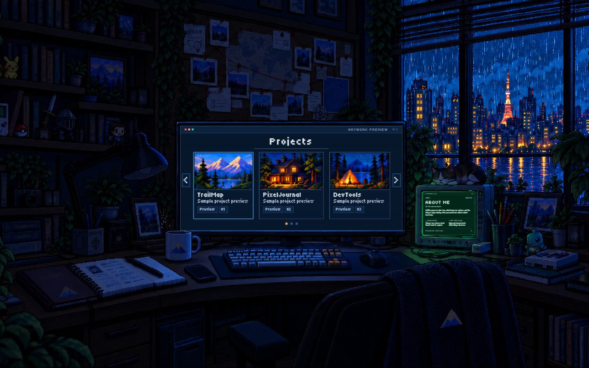
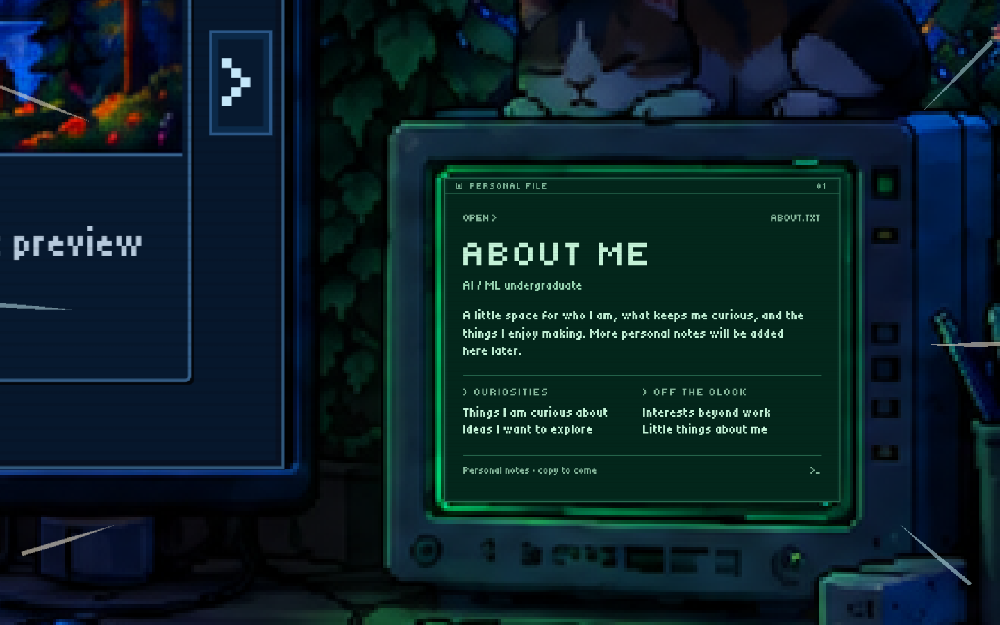
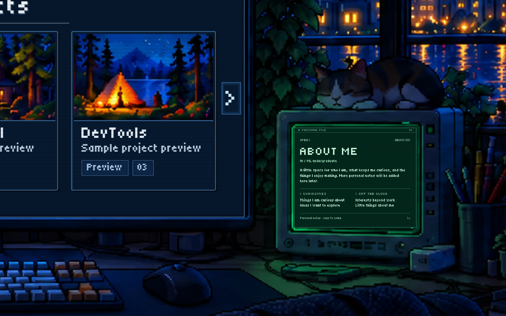
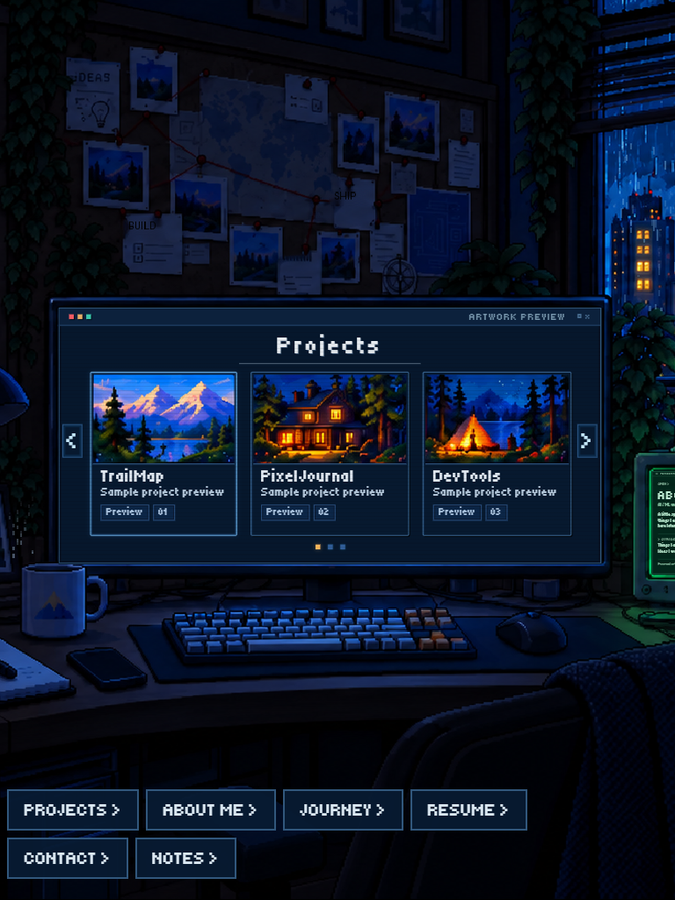
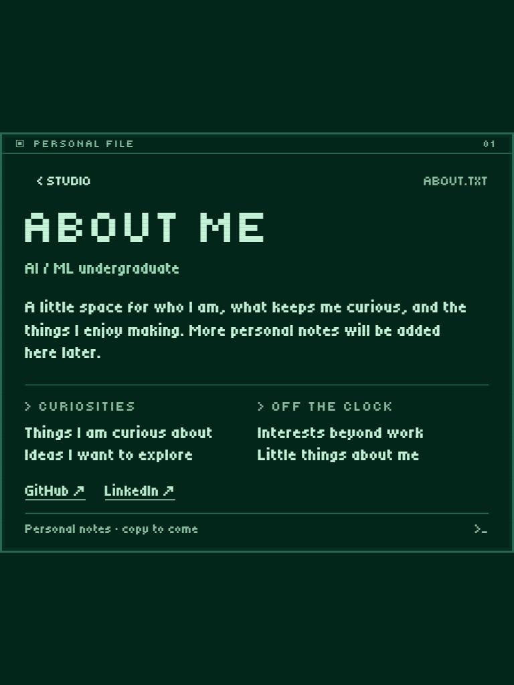
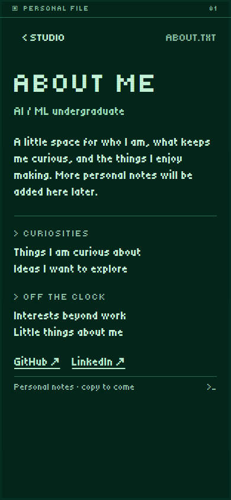

Earlier and updated streak visibility →
Try the studio animation · Open About Me directly · Projects review
Recorded in the browser: About Me entrance and return in the dark studio, lamp activation, then entrance and return in the lit studio.





